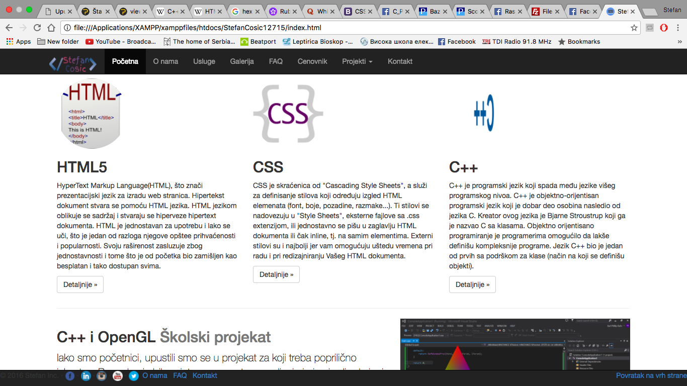
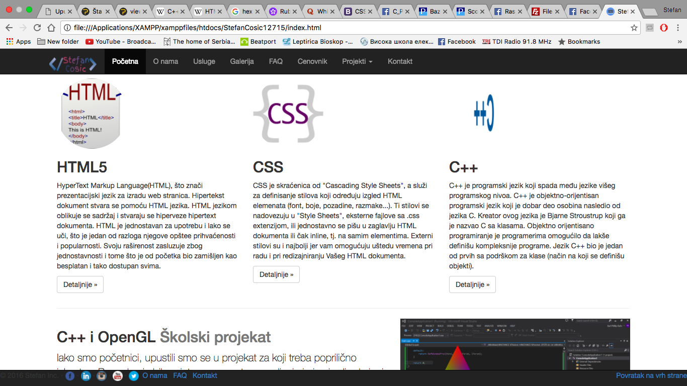

Space Invaders
Školski projekat kod profesora Perice Štrbac bio je vezan za programski jezik C++ i OpenGL. Par kolega i ja smo osmislili ideju i zatim je došao teži deo posla, (pošto nismo imali dodira ni sa jednim od navedenih programskih jezika) da se otkuca kôd. Nakon dosta vremena, muke, kod je proradio i mi smo bili presrećni, usput smo dosta naučili, o samom načinu funkcionisanja debagera, o tome kako treba razmišljati, da svaku sitnicu pre početka pisanja koda treba na papir staviti, a tek onda korsititi razvojno okruženje.
Morali smo da napravimo više objekata, pa da ih sve smestimo u matricu, koja je bila dinamička, pomerala se ulevo. Zatim smo kreirali strukturu igrač koja je mogla da se kreće po y-osi i statične elemente po y-osi, ali zato se x koordinata smanjivala po vremenua samo pojavljivanje tih elemenata je bilo na slučajnoj poziciji (nisu smeli da se preklapaju, kao ni da budu svi u sitom redu). Sve to je dovodilo do toga da deluje kao da se elementi pomeraju ka igracu koji mora da ih izbegava i na taj način "preživi".
Igrica je imala tri nivoa. Prelaskom u novi nivo (u matrici je bilo 200 elemenata), odnosno prolaskom svih elemenata matrice, dolazila je nova matrica sa istim brojem elemenata, novim rasporedom, ali su elementi nailazili dosta brže nego u prethodnom nivou. Igrica se završava kada se sudarite sa dolazećim objektom.
Muzički magazin
Druga godina studija, nova znanja, novi programski jezik za mene i prvi samostalan projekat- sajt Muzičkog magazina. Lep osećaj, ali zadatak nimalo lak. Za mene kao početnika predstavljalo je izazov to što smo zadatak dobili na pola semestra, što je značilo da nismo prešli ni celokupno gradivo, a kako to obično bude, nije sve baš 100% ni naučeno.
Svaki početak je težak, pa tako ni ovo nije išlo glatko. Prvo sam morao osmisliti dizajn, a ni sam nisam znao šta želim, niti kako to može da izgleda. Dosta pomoći sam imao sa časova Web Dizajna, pa sam primenio neke elemente tamo naučene (kako i gde treba smestiti koji element, koje boje su preporučljive, kako koristiti naslove, itd.). Nakon par sati eksperimentisanja, kucanja, isprobavanja, brisanja, pa ponovnog dizajniranja, napravio sam nešto što je mene zadovoljilo, mada sam opet bio i poprilično nezadovoljan. Svaki put kada nešto pravite, želite da to bude najbolje što može.
Na kraju sam napravio sajt, imao je samo 5 strana, ali to je bio kriterijum. Početna strana, sa navigacijom, lepom HD slikom, tekst kao slogan na sredini ispod navigacije, a ispod toga dugme koje nas šalje na formu za rezervacije karata za koncerte. Stranica o nama sa uopštenim informacijama, zatim galerija sa slikama sa nedavno održanih koncerata, već pomenuta rezervacija karata i stranica kontakt sa podacima o tom nekom magazinu.
Moj sajt
Moj sajt je upravo ovaj sajt na kojem sam radio, a rezultat možete i sami videti. Još jedan u nizu školskih projektata. Ovde je akcenat stavljen na gotove elemente "Bootstrapa" i njihovu izmenu. Pozitivna stvar je ta što možete za relativno kratko vreme da uradite neki sajt, a da on pritom ne košta više od 150 evra.
Bootstrap koristi, takođe, svoje CSS i JS fajlove u kojima je sav kod koji koriste svi elementi koje oni poseduju na svom sajtu. To je, donekle, problem početnicima u ovoj oblasti, jer ako niste dobro savladali CSS, nece vam biti jasno zašto se nešto ne menja, a vi ste u svom CSS fajlu napisali to što ste želeli da uradite. Kao što već rekoh, Bootstrap koristi svoj CSS i tu ima svega, tako da nekad ta neka svojstva koja očigledno smetaju vašim moraju biti ili promenjena ili izbrisana.
Ovaj sajt još nije ocenjen, ali nadam se da ima sve elemente koji su traženi, pošto sam uložio dosta truda i rada. Nažalost, svaki sajt radjen pomoću Bootstrapa liči jedan na drugi. Potrudio sam se da to ne bude baš 100% slučaj i sa ovim. Vi procenite!
Lavirint
Lavirint je projekat iz predmeta Programski jezici. Pravljen je u programskom jeziku C++. Naravno, nakon dobro smišljene ideje po kojoj ce se kasnije pisati kôd bilo je još nekih zahteva od strane profesorke.
Igrica/program je morao da sadrži sledeće elemente:
-Funkcije
-Strukture
-Rad sa datotekom
-Dinamičku dodelu i oslobadjanje memorije
Moj lavirint se sastojao iz dosta funkcija koje su pokretale meni, prikupljale komande od igrača, upisivale ime igrača u strukturu, pa odatle u datoteku, kao i iz datoteke na ekran kad je to zatraženo. Sve u svemu, dosta razmišljanja o samoj logici, ali i isprobavanja kôda.
Logika je bila da kad se pokrene igrica, vidimo uvodni tekst dobrodošlice i zatim da iz glavnog menija biramo da li želimo da započnemo igru, da vidimo prethodne rezultate, da ostavimo utisak o igrici, ili da izađemo iz igrice. Nakon započinjanja, od nas se traži da unesemo ime, nakon toga biramo nivo i krećemo. Prvi nivo je cinila matrica dimenzija 21x21 (10 polja), drugi nivo matrica veličine 31x31, a treći nivo matrica 41x41. Zidove lavirinta činili su simboli "#" dok su prostor između njih zauzimali prazni karakteri ili " ". Cilj igrice je izaći iz lavirinta, na obeleženom izlazu. Rezultat je zavisio od broja pomeraja igrača. Zabavio sam se dok sam je pravio, zabavili se profesori kad sam branio rad.

 
